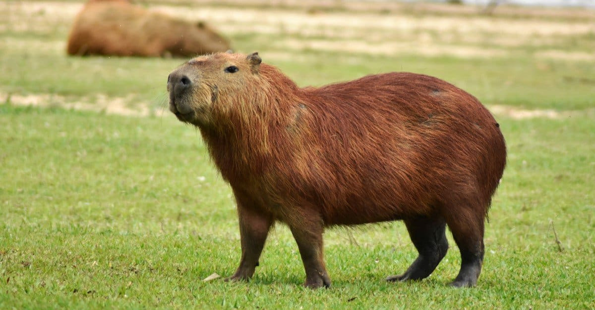

WELCOME TO THE WORLD OF CAPYBARA
What is a capybara?
The capybara or greater capybara is a giant cavy rodent native to South America. It is the largest living rodent and a member of the genus Hydrochoerus. The only other extant member is the lesser capybara.
Are capybaras friendly?

They're not aggressive towards humans or other animals, and they're even known to be friendly with other animals, like dogs and cats. Capybaras are also very intelligent, so they can be trained to do tricks and obey commands.
Do capybaras make good pets?

Capybaras enjoy being petted and cuddled, making them good pets. Capybaras make good pets because they are friendly wild animals, enjoy being petted, and are relatively easy to care for in the right conditions. In addition, most pet capybaras love being cuddled by their favorite humans.